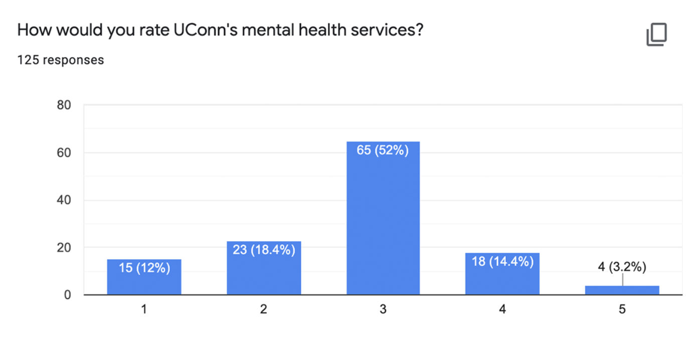
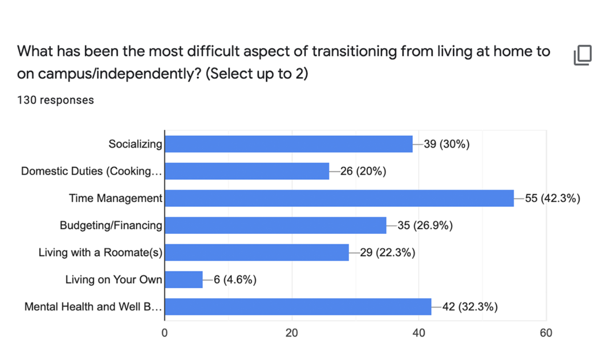
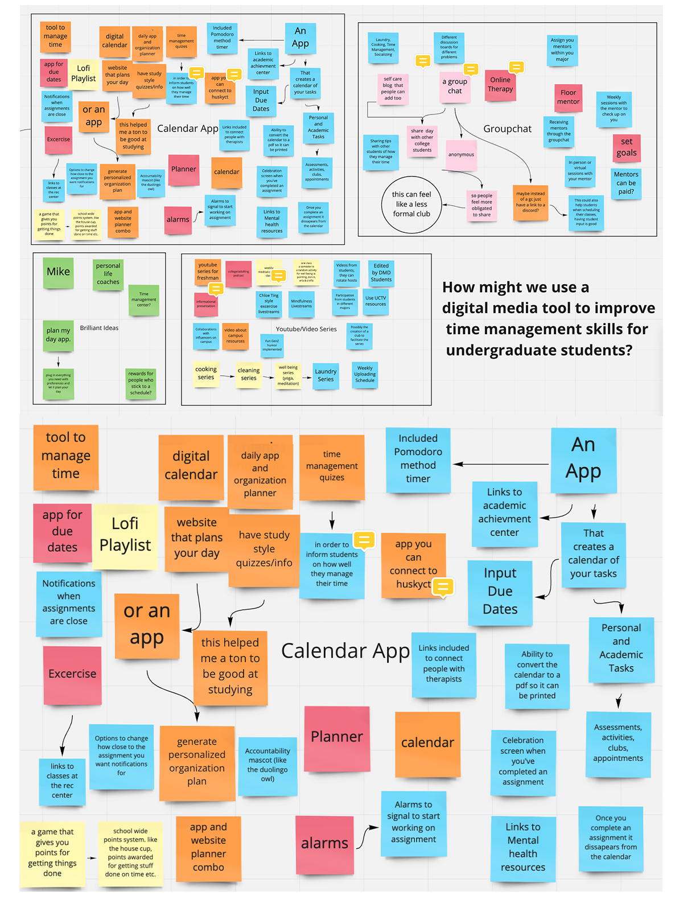

UCann App
UCann is a concept app I created as part of a group project. We were tasked to solve a problem that affects students at UConn.
Research Steps
- Interviewed 13 students
- Created a survey which was completed by 130 people
- Interviewed the Assistant Director of the Academic Achievement Center


After we analyzed the results of these 2 surveys, we realized that the top 3 aspects that students had trouble adjusting to were all interconnected
Problem Statement
How might we use a mobile app to improve time management skills for undergraduate students at UConn?
Next, we decided to reach out to an expert on time management, Leo Lachut of the Academic Achievment Center
Interview with the Academic Achievement Center
Questions
- 1) How many people use the Time Management resources on your website
- A lot of people use the resources, but they can't track exactly
- Storrs: 5,000 students signed up for an event with the AAC this year
- Hartford: 1,400 students signed in this year
- Chunking: People can only handle 30 minutes of work: Pomodoro App
- 2) What way do you find is the most effective for students to track assignments
- Time Management: Attention Management, Life Managament, Self Regulation
- Attention Management: Attention span is shrinking, can't focus, can't study
- Life Management: Are you prepared for the unexpected events of life that can derail your plans?
- Self Regulation: Internal motivation, procrastination: class or professor you don't like
- People go to the AAC for accountability
- Download calendar, apps, semester at a glance: 14 week calendar
- People track hour by hour, not big picture: Plan life around large calendar
- 3) Do you see a correlation between time management and mental health?
- SNAP: Sunday Night Assesment and Planner
- Sunday Scary: A lot of anxiety for the impending week on Sunday
- Most heart attacks occur on Sundays
- Mental Health: Motivation, Pomodoro Method
- Some anxiety and stress is motivating, crossing that line is debilitating
- COVID: Social engagement fatigue
- Overly Tired: Relearning social skills, Sophomores are struggling because they were off campus
Ideation Stage

We used Miro, a web application to help us with our ideation stage. We brainstormed 3 different ideas until we eventually chose our favorite
Top 3 Ideas
- Calendar App
- YouTube Channel
- Group Chat
Functionalities
- Personal and Academic Tasks: Manually input assignments
- Accountability: Mascot (Jonathan the Husky), Notifications that users can change the frequency of, Celebration Screens
- Mental Health: Pomodoro Timer, Mental Health Resources
- Paper vs. Virtual: Ability to convert calendar into a PDF to print
What's Next?
- Potential Users testing the app and giving feedback
- Coducting focus groups
- Interviews about the app
- Surveys about each of the aspects of the app
- Creating a team of students to develop the app
- Applying for UConn funding to allow for the point system
- Creating connections with local businesses for their support